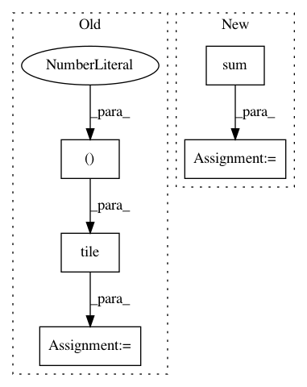

d6acc5e620a5c566b3421b1c8bf2a66a064ca5bd,scanpy/preprocessing/simple.py,,normalize_per_cell_weinreb16_deprecated,#Any#Any#Any#,779
Before Change
return X_norm
// restrict computation of counts to genes that make up less than
// constrain_theshold of the total reads
tc_tiled = np.tile(counts_per_cell[:, np.newaxis], (1, X.shape[1]))
included = np.all(X <= tc_tiled * max_fraction, axis=0)
tc_include = np.sum(X[:, included], axis=1)
tc_tiled = np.tile(tc_include[:, np.newaxis], (1, X.shape[1])) + 1e-6
X_norm = X / tc_tiled
if mult_with_mean:
X_norm *= np.mean(counts_per_cell)
return X_norm
After Change
if max_fraction < 0 or max_fraction > 1:
raise ValueError("Choose max_fraction between 0 and 1.")
counts_per_cell = X.sum(1).A1 if issparse(X) else X.sum(1)
gene_subset = np.all(X <= counts_per_cell[:, None] * max_fraction, axis=0)
if issparse(X): gene_subset = gene_subset.A1
tc_include = X[:, included].sum(1).A1 if issparse(X) else X[:, included].sum(1)
X_norm = X / tc_include[:, None]
if mult_with_mean:
In pattern: SUPERPATTERN
Frequency: 3
Non-data size: 5
Instances
Project Name: theislab/scanpy
Commit Name: d6acc5e620a5c566b3421b1c8bf2a66a064ca5bd
Time: 2018-10-25
Author: 31883718+VolkerBergen@users.noreply.github.com
File Name: scanpy/preprocessing/simple.py
Class Name:
Method Name: normalize_per_cell_weinreb16_deprecated
Project Name: aleju/imgaug
Commit Name: d09c305e3b74bf3760d679ddc5ae9ca631e063cb
Time: 2019-01-28
Author: kontakt@ajung.name
File Name: imgaug/augmenters/arithmetic.py
Class Name: ReplaceElementwise
Method Name: _augment_images
Project Name: keras-team/keras
Commit Name: 45a10bc6d708fade197a37bfbc62312caf70e6a7
Time: 2017-02-17
Author: francois.chollet@gmail.com
File Name: keras/layers/convolutional_recurrent.py
Class Name: ConvLSTM2D
Method Name: get_constants